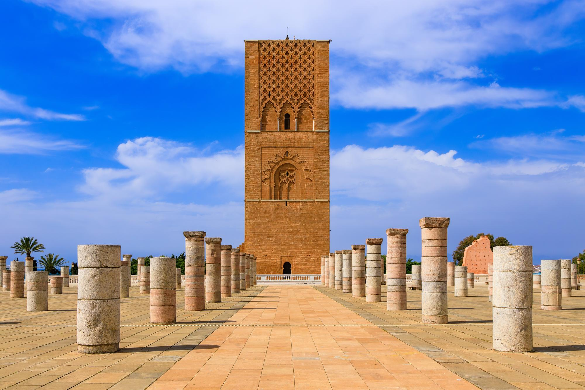
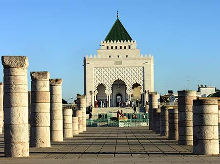
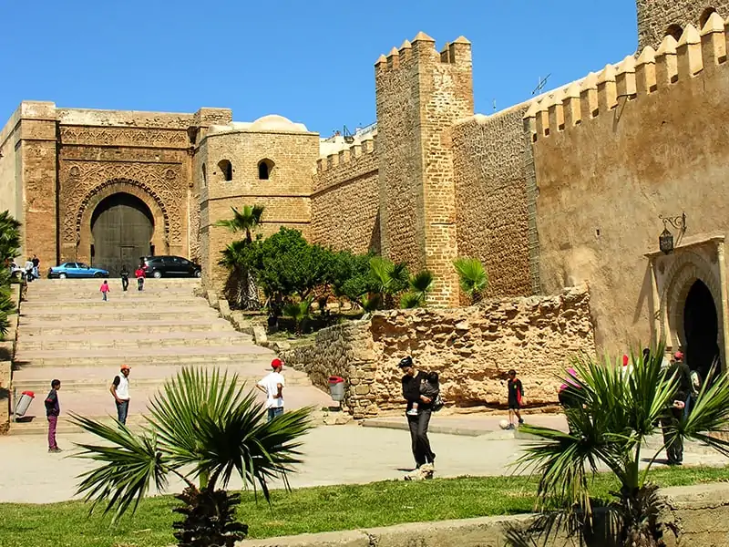
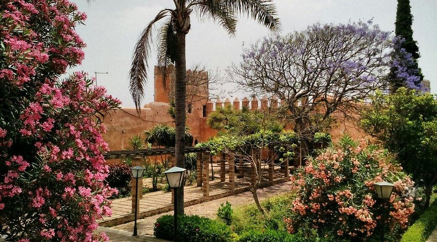
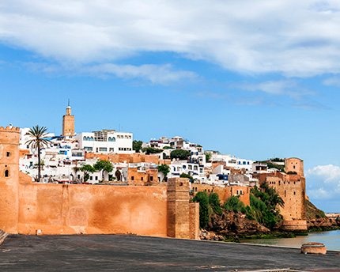
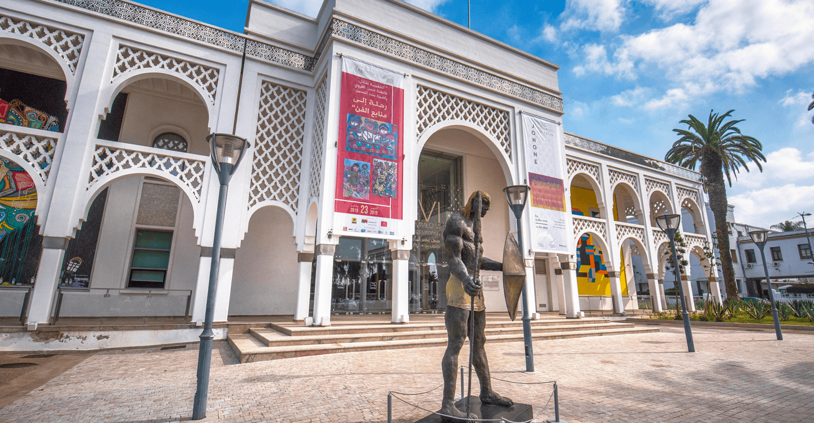

À propos de Rabat
Rabat, capitale politique du Maroc, est une ville élégante au patrimoine riche. Entre modernité et histoire, elle se distingue par ses monuments emblématiques, ses espaces verts et sa qualité de vie exceptionnelle.
Faits rapides
- Population: ~580k
- Région: Rabat-Salé-Kénitra
- Langues: Arabe, Français
- Climat: Océanique, étés doux et hivers frais
Culture
Rabat est une ville culturelle par excellence, abritant des musées nationaux, des théâtres, des sites historiques et de grands événements artistiques. La Médina, la Kasbah des Oudayas et ses jardins sont des symboles de la richesse patrimoniale de la capitale.
La ville accueille également le célèbre Festival Mawazine, l'un des plus grands festivals musicaux au monde.
Artisanat
Tapis, broderies, bijoux et objets traditionnels.
Musique & Festivals
Festival Mawazine et évènements artistiques.
Plages
Plage de Rabat, Skhirat à proximité.
Gastronomie
Spécialités marocaines, poissons et cuisine raffinée.
Sites incontournables

Tour Hassan
Minaret inachevé datant du XIIᵉ siècle, symbole de Rabat.

Mausolée Mohammed V
Chef-d'œuvre d’architecture abritant les tombes royales.

Kasbah des Oudayas
Quartier historique aux maisons bleues, vue sur l’oued Bouregreg.

Jardin Andalou
Jardin traditionnel calme, situé au cœur de la Kasbah.

Médina de Rabat
Ruelles historiques, souks traditionnels et ambiance authentique.

Musée Mohammed VI d'Art Moderne
Musée national dédié à l'art moderne et contemporain.